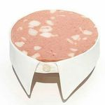

meowed
Curtido por respondeai e outras 101.523 pessoas
Pesquisa

9gag
meowed
barked
nathan
wawa
respondeai
filomoderna

memeriago
Curtido por respondeai e outras 101.523 pessoas
Curtido por respondeai e outras 101.523 pessoas
Curtido por respondeai e outras 101.523 pessoas